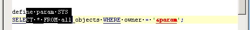
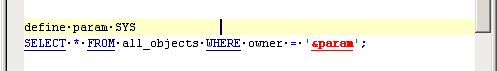
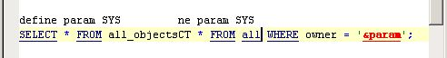

Use Column Selection mode instead of Stream Selection.
Column Selection is selection mode which select text contains into a
rectangle :

This mode is very usefull to paste text into lines, for
example, previous selected text is pasted at new position :

Here is result of paste action :
